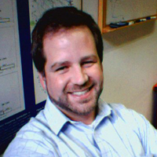
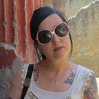
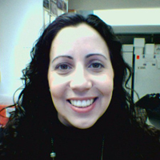
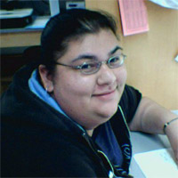
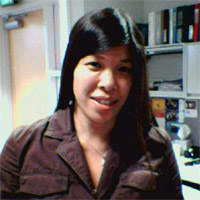

Staff
Adam Santaniello

Adam has a B.S. in Engineering Science with Tau Beta Pi honors from Tufts University in Medford, MA. His prior experience includes software development and project management for consulting and financial services firms. He joined our lab in November 2007 and is leading the integration and enhancement of the lab's data sources.
Thomas Carpenito

Tommy joined the MS lab in June 2015 after navigating the startup scene in Silicon Valley. He graduated from Northeastern University in Boston, MA with a B.S. in Behavioral Neuroscience and has prior experience working with patients in a low income psychiatric hospital. Tommy's day to day roles vary widely but he mostly helps out with database integration and creating new software for the lab.
Stacy Caillier

Stacy started working with the MS Genetics Research Group in July of 1998, after graduating from the University of California, Santa Cruz with a bachelor degree in Neuroscience and Behavior. In addition to heading up the DNA genotyping projects, she works in quantitative PCR, and SNP/expression chips. More recently, Stacy is leading the application of immunological assays to assess the functional role of genetic variants associated with MS susceptibility and progression.
Cuquita Gomez

Cuquita graduated in 2002 from UC Davis with a degree in Biological Sciences with an emphasis in Neurology, Physiology, and Behavior. She joined the MS Genetics group in August of 2004. She interfaces with patients, physicians and nurses for the recruitment of subjects for our studies and manages the flow of biological specimens from the point of their collection to their storage at out laboratory. She assimilates clinical and epidemiological information from many sources, verifies the integrity of the data, and then incorporates the data into our large database system.
Hourieh Mousavi
Hourieh worked with us from 1999-2000 and rejoined the group in April 2004. She holds a bachelors of science degree in Biology from the National University of Iran, Tehran. Hourieh's responsibilities include preparing DNA, whole genome amplification, cell culture as well as sample allocation for ourselves and collaborators world-wide.
Rosa Guerrero

Rosa started working with the group in July of 2004 after working at the UCSF DNA Bank. Rosa primary responsibility is the isolation of high quality nucleic acids from blood samples received from across the United States and abroad for genetic studies in MS.
Janet Yau

Janet came to us with a Bachelor's Degree in Business Administration and her position covers a wide variety of responsibilities related to purchasing and funds management. She also plays a key role in assuring smooth daily lab operations.